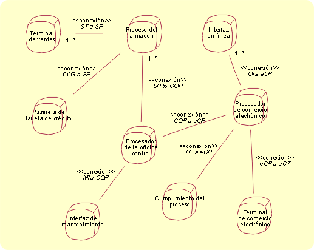
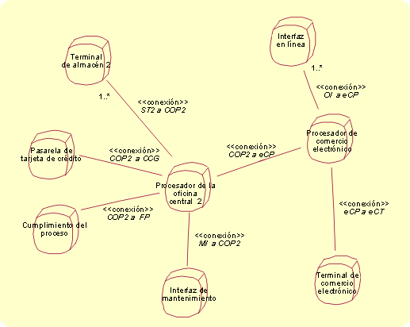

| Concepto: Localidad |
 |
|
| Elementos relacionados |
|---|
IntroducciónEn el apartado Concepto: Arquitectura del sistema, encontrará la idea de puntos de vista desde los que se puede examinar un sistema; aquí, es especialmente importante el punto de vista físico. Este punto de vista "focuses on the distributed interactions between objects in the system, and provides the mechanisms to support distribution" (se centra en las interacciones distribuidas entre objetos del sistema y proporciona los mecanismos para la distribución de soporte) [cita de Architecting with RM-ODP, Janis Putman, Prentice Hall PTR]. En el nivel descrito aquí, los objetos lógicos incluyen instancias del subsistema. El modelo de desarrollo soporta este punto de vista mediante la descripción de cómo se distribuye el sistema físicamente y el soporte físico para interacciones distribuidas entre los objetos lógicos que soporta el sistema. El objetivo de un modelo de despliegue es capturar la descomposición del sistema en elementos que alojan el proceso. Esto se realiza en varios niveles de abstracción, que son: Localidad (el más abstracto), Descriptor e Implementación (el menos abstracto, en él se describen las elecciones actuales de hardware y software). Estos niveles son más o menos equivalentes a los niveles Conceptual, Especificación y Físico que se describen para el modelo de despliegue (que se utiliza cuando la aplicación de RUP se limita al desarrollo de software). La manifestación más familiar de un modelo de despliegue se encuentra en los niveles de diseño e implementación, mediante la utilización de diagramas de despliegue de UML. A continuación, se ofrece una introducción al nivel de análisis, el concepto de punto de vista físico de Localidad. Localidades y conexionesEl modelo de Localidad representa la partición inicial, abstracta y física y la distribución del sistema, y se ocupa de los recursos físicos del sistema (nodos, dispositivos, sensores y sus interfaces y conexiones físicas; y las características físicas de estos, por ejemplo, el peso, la generación de calor, el consumo de energía, la vibración, etc.). Una localidad expresa de forma nocional dónde se produce el proceso (la semántica de la localidad implica una agrupación de recursos más ajustada) sin definir la ubicación geográfica exacta o cómo debe realizarse la capacidad de procesado. En sistemas muy grandes y complejos, es concebible que el modelo de localidad inicial tenga localidades que se descomponen en localidades más concretas (del mismo modo que un subsistema puede contener subsistemas). En el nivel de Descriptor, se especifican los tipos de recursos de proceso de una localidad; estos tipos son nodos, que pueden incluir dispositivos informáticos (servidores, estaciones de trabajo, etc.), personas u otros dispositivos electromecánicos. Por último, en el nivel de Implementación, se realiza la selección de hardware real, se determina el número de instancias de rol (en el caso de los recursos humanos), con un conjunto definido de configuraciones, capacidad, energía y otros requisitos de entorno, coste y rendimiento. Por ejemplo, una vista de localidad puede mostrar que el sistema habilita el proceso a bordo de un satélite espacial y una estación terrestre. Otros ejemplos se muestran en las figuras del apartado Diagramas de localidad. El modelo de despliegue también se utiliza para registrar las operaciones del subsistema que se alojan en cada localidad, esto determina los requisitos informáticos que debe soportar la localidad. En función del comportamiento que se deba soportar en las localidades, se pueden construir colaboraciones de localidades (y se pueden representar en diagramas de interacción); las colaboraciones ayudan a caracterizar las conexiones entre las localidades. Los diagramas de localidad muestran la partición inicial, cómo se distribuyen los elementos de proceso del sistema y cómo se conectan. La localidad de la informática es importante cuando se consideran principalmente los requisitos no funcionales y, para muchos ingenieros de sistemas, es "la arquitectura." Los diagramas de localidad constan de dos elementos:
La semántica de los diagramas de localidad es similar a la de los diagramas de despliegue, y las localidades se representan como nodos de UML estereotipados. En el estándar UML, un nodo es un clasificador que "... es un objeto físico que representa un recurso del proceso que, generalmente, tiene como mínimo una memoria y también capacidad de procesado. Los nodos incluyen dispositivos informáticos, pero también recursos humanos o recursos de procesado mecánico. UML permite ampliar la semántica de los nodos y las asociaciones que los conectan, a través del estereotipado y la aplicación de valores etiquetados; estos recursos se utilizan para definir localidades y conexiones. El icono de una localidad es un cubo redondeado (véanse las ilustraciones del apartado Diagramas de localidad). Cada localidad del modelo de despliegue necesita una descripción adjunta de los requisitos suplementarios derivados (derivados de las especificaciones suplementarias), que especifiquen los requisitos de calidad (fiabilidad, mantenimiento, seguridad, etc.), físicos y de entorno, y las restricciones de desarrollo (coste, riesgo técnico, etc.). A partir de estos requisitos, se determinan las características reales (de cada localidad); obviamente, se escogen de forma que satisfagan como mínimo los requisitos explícitos, aunque pueden superar los requisitos si la práctica de ingeniería lo impone, por ejemplo, para afrontar demandas de capacidad inesperadas. Las localidades se caracterizan con:
Las conexiones se caracterizan por lo siguiente:
A medida que se acerca al modelo de diseño, las localidades se pueden perfeccionar en uno o varios nodos, o se puede correlacionar más de una localidad con un solo nodo. Y, gracias a la libertad que proporciona la definición de UML, las localidades pueden representar elementos bastante dispares, realizados en última instancia, por ejemplo, como una recopilación de plataformas de hardware, parte de un recurso computacional o grupos de recursos humanos de colaboración. Diagramas de localidadLas figuras muestran diagramas de localidad que documentan diferentes enfoques de ingeniería para una empresa física y virtual. La empresa tiene una serie de establecimientos minoristas, almacenes centrales y presencia en la web. En la primera solución, los establecimientos tienen capacidad de procesado. En la segunda, todas las terminales están conectadas directamente con un procesador de oficina central. En cada caso, se pueden establecer las características para las localidades necesarias para realizar el diseño. Actualmente, la mayoría de las personas estaría de acuerdo en que el primer ejemplo es un diseño mejor. Sin embargo, es posible que la solución del segundo ejemplo llegue a ser superior en unos cuantos años.  Diagrama de localidad, Ejemplo 1.  Diagrama de localidad, Ejemplo 2. |
© Copyright IBM Corp. 1987, 2006. Reservados todos los derechos. |